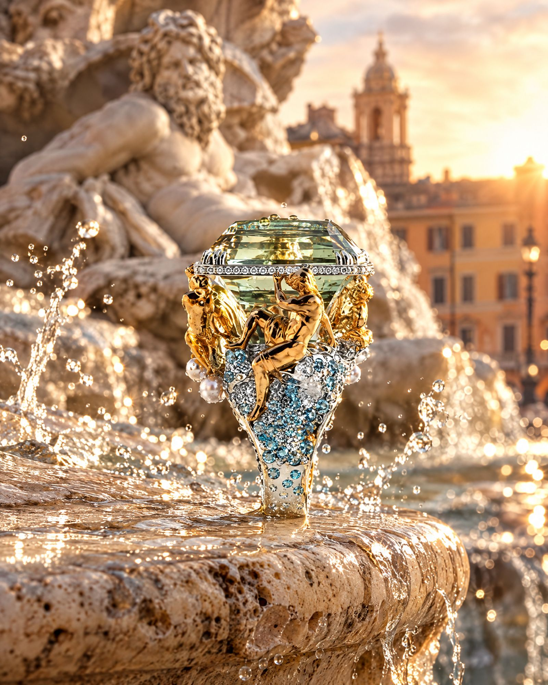

Historica
A luxurious past, with stories and personalities from European history, the fascinating Orient and glorious Empires.
A luxurious past, with stories and personalities from European history, the fascinating Orient and glorious Empires.
Many of the jewels are crafted with details taken from the finest architectural motifs: a palace becomes a necklace, a fountain becomes a ring, a temple roof becomes a row of sapphires.


